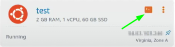
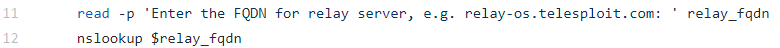
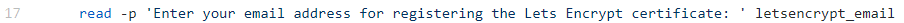
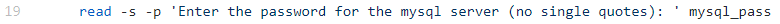
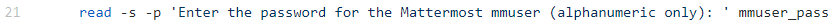
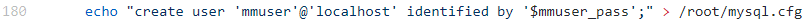
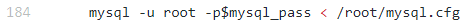
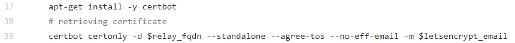
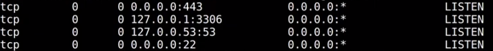
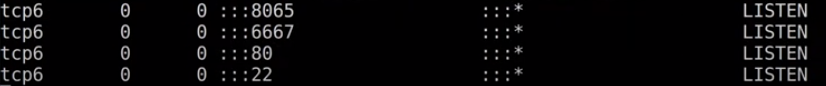

1.2 Configure Relay from the Client
Configure
The configuration of the relay can be done also directly from the
console of lightsail.aws.amazon.com that is browser based but from the experience of Dustin Dykes (aka @DHAhole) Chief Consultant of Telesploit it will disconnect constantly, so is better to configure by connecting via ssh from the Client(the machine of the Penetration Tester)
1. To check if the Telesploit Relay works and is online we have to ping the subdomain that we have associated with the Ip address of the AWS instance(see
here)
daniele@TelesploitClient:/$ ping <relaySubdomain>
2. Now we want to access via ssh:
daniele@TelesploitClient:/$ ssh -i <private-key.pem> ubuntu@<relayIpAddress>
It will ask for a passphrase that we have inserted
during the creation of Telesploit Relay on AWS.
To know more about the private and public key on amazon AWS see
https://docs.aws.amazon.com/AWSEC2/latest/UserGuide/ec2-key-pairs.html3.
Now we are on the AWS instance(that will become our Telesploit Relay), we have to install from github the code of Telesploit
daniele@TelesploitRelay:~$ sudo -i #we have to run relay_setup.sh as root
root@TelesploitRelay:~# cd /root #in ubuntu the home directory is rappresented with ~
root@TelesploitRelay:~# apt-get update -y
root@TelesploitRelay:~# apt-get upgrade -y
root@TelesploitRelay:~# git clone https://github.com/telesploit/telesploit-relay.git
root@TelesploitRelay:~# cd telesploit-relay/
root@TelesploitRelay:~# ls
root@TelesploitRelay:~# ./relay_setup.sh
4.
relay_setup.sh will ask the following questions:
1)
Enter the FQDN for relay server, e.g. relay-os.telesploit.com:
 If the relay does not resolve, then exit now. Verify a corresponding A record exists in the page of the the webpage provider(example Godaddy)
To associate the Ip address of the AWS Instance with a subdomain of our own domain on godaddy see:
https://www.godaddy.com/help/create-a-subdomain-4080 4)
Enter your email address for registering the Lets Encrypt certificate:  Enter an email (also gmail is ok) for Let's Encrypt, that will warning us when 90 days are coming up, and we have to reopen port 80 to reapply the certificate
The following questions are to setup Mattermost mysql is going to be used for Mattermost
mysql will holds the database of the conversations
3)
Enter the password for the mysql server (no single quotes):
 4)
Enter the password for the Mattermost mmuser (alphanumeric only):
  In the script first we have written the commands to execute in a text file and then we have given this file with the commands to execute to mysql:
the explanation of the following command is on the
mysql manual  We can check explanation of the mysql commands in
relay_setup.sh:
- here:
https://docs.mattermost.com/install/install-ubuntu-1604-mysql.html - or here:
https://docs.mattermost.com/install/install-ubuntu-1804.html#installing-mysql-database-server certbot will be installed to set up Let's Encrypt. Let’s Encrypt uses the ACME protocol to verify that you control a given domain name and to issue you a certificate.
To get a Let’s Encrypt certificate we need an ACME client and certbot is very good :)
5. After that relay_setup.sh has finished we can renoot the AWS instance
root@TelesploitRelay:~# reboot
6. We have to reaccess via ssh to the AWS instance via shh as we are already done at the point 2
daniele@TelesploitClient:/$ ssh -i <private-key.pem> ubuntu@<relayIpAddress>
It will ask for a passphrase that we have inserted
during the creation of Telesploit Relay on AWS.
7. Check the listening connections on the AWS relay
daniele@TelesploitRelay:~$ netstat -clant
the only listening connections should be :
port 22 → listening on all ipv4 network adapters (0.0.0.0) and ipv6 network adapters(::)
port 443 → listening on on all ipv4 network adapters (0.0.0.0) and ipv6 network adapters(::)
Mattermost server port 8065 → listening on all IPv6 network adapters(::)
IRC (port 6667) → listening on all IPv6 network adapters(::)
 